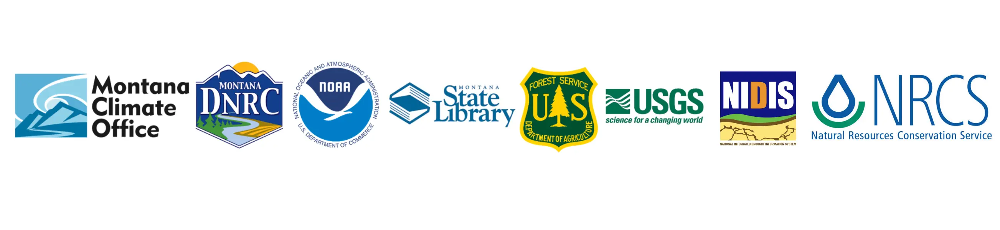

UMRB Drought Indicators Dashboard
MT Mesonet
MCO GitHub
Welcome to the new UMRB Drought Dashboard!
This version of the dashboard features an all-in-one mapping approach. Select a variable from the dropdown menu on the left side of the map to get started.
